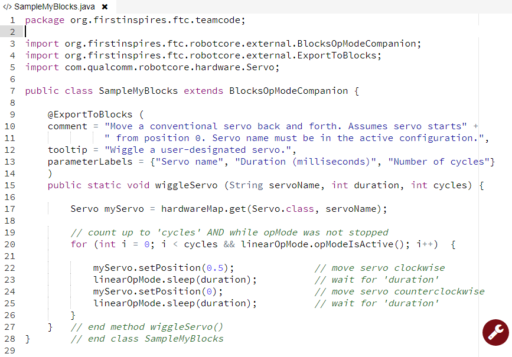
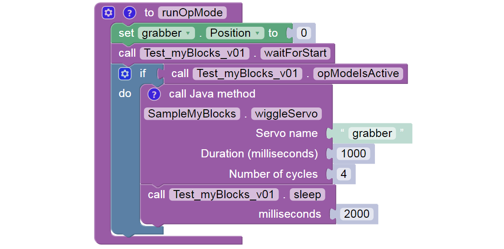

Hardware Example: control a servo
Here’s a very simple example to illustrate how a myBlock can access the robot hardware. Here, the Blocks user enters the servo’s name as a parameter of the myBlock.

Example Code
package org.firstinspires.ftc.teamcode;
import org.firstinspires.ftc.robotcore.external.BlocksOpModeCompanion;
import org.firstinspires.ftc.robotcore.external.ExportToBlocks;
import com.qualcomm.robotcore.hardware.Servo;
public class SampleMyBlocks_v01 extends BlocksOpModeCompanion {
@ExportToBlocks (
comment = "Move a conventional servo back and forth. Assumes servo starts" +
" from position 0. Servo name must be in the active configuration.",
tooltip = "Wiggle a user-designated servo.",
parameterLabels = {"Servo name", "Duration (milliseconds)", "Number of cycles"}
)
public static void wiggleServo (String servoName, int duration, int cycles) {
Servo myServo = hardwareMap.get(Servo.class, servoName);
// count up to 'cycles' AND while opMode was not stopped
for (int i = 0; i < cycles && linearOpMode.opModeIsActive(); i++) {
myServo.setPosition(0.5); // move servo clockwise
linearOpMode.sleep(duration); // wait for 'duration'
myServo.setPosition(0); // move servo counterclockwise
linearOpMode.sleep(duration); // wait for 'duration'
}
} // end method wiggleServo()
} // end class SampleMyBlocks_v01
Lines 10-11 contain two strings of text (each in quotes), joined with a “+” character to form a single text string. This is an alternate way to meet the requirement that a comment field must be a single line of text, with no ‘line break’. Shorter strings allow all the text to be visible on-screen, without scrolling sideways.
Line 15: this method has 3 inputs and no outputs (keyword void).
Line 17 shows how to access hardwareMap, the configured devices list provided from BlocksOpModeCompanion. That single line of Java does this: - declare a new variable called myServo, of type (class) Servo - get the properties (methods and variables) of the named servo from hardwareMap - assign those properties to the new variable myServo
Line 20 is a for loop, which you can learn about
here or
here.
It runs the specified servo back and forth, using the specified duration
and number of cycles. This for loop has the added condition
opModeIsActive(), to monitor and verify the OpMode has not been
stopped.
Lines 22 and 24: the object myServo uses a method setPosition() from
the Servo class.
Lines 23 and 25: the object linearOpMode uses a method sleep() from
the class inherited from BlocksOpModeCompanion.
The Blocks user must enter the exact device name from the active
configuration. Hardware device names (motors, servos, sensors) are
found in the Configure Robot menu of the RC app or paired DS app. Or, it
might be easier to retype the name from any Blocks drop-down list
containing those device types. For example, a green Servo
set .Position Block will display all configured servo names – make
sure the correct configuration was made active before entering the
Blocks session.
As an alternate, you could ‘hard-code’ the servo’s name directly into the Java method, instead of the Blocks user entering the servo name as a parameter.
PROs of hard-coding: - myBlock is simpler - Blocks user doesn’t need to know or enter the servo name
CONs of hard-coding: - you need to know the exact servo name in advance - if the name ever changes, your myBlock cannot find the servo
Note
As a programmer, you will constantly face choices like this, with pros and cons. This is part of software design, a key professional skill and career path.
A different version (gamepad-controlled, fully commented) of the above Java program is provided below. It illustrates using 5 of the 6 objects provided by BlocksOpModeCompanion, including telemetry and the gamepads. This longer example, or the short version above, could be used in an OpMode like this:
The final .sleep Block allows any telemetry to remain visible on the
DS screen, before this sample OpMode ends.
Different Version of Example Code
/*
This is a sample Java program for an FTC myBlocks tutorial. This class
contains methods that define myBlocks for FTC Blocks programming.
Demonstrates using 5 of the 6 objects inherited from BlocksOpModeCompanion:
linearOpMode, hardwareMap, telemetry, gamepad1, gamepad2.
Each of these 5 objects allows direct/convenient use of its commands (methods).
*/
// a myBlocks class must exist in the 'teamcode' folder/package
package org.firstinspires.ftc.teamcode;
// these are (usually!) automatically listed by OnBot Java when needed
import org.firstinspires.ftc.robotcore.external.BlocksOpModeCompanion;
import org.firstinspires.ftc.robotcore.external.ExportToBlocks;
import com.qualcomm.robotcore.hardware.Servo;
// BlocksOpModeCompanion provides 6 classes useful for myBlocks
public class SampleMyBlocks_v02 extends BlocksOpModeCompanion {
// annotation required for method to be a myBlock; 3 features optional
@ExportToBlocks (
comment = "Move a conventional servo back and forth. Assumes servo starts" +
" from position 0. Servo name must be in the active configuration.",
tooltip = "Wiggle a user-designated servo.",
parameterLabels = {"Servo name", "Duration (milliseconds)", "Number of cycles"}
)
// this is a myBlock method with 3 inputs and no outputs (void)
public static void wiggleServo (String servoName, int duration, int cycles) {
/*
1. Declare new object called myServo, of type (class) Servo.
2. Get properties of named servo from hardwareMap (configuration).
3. Assign those properties to new object myServo.
*/
Servo myServo = hardwareMap.get(Servo.class, servoName);
// Display confirming messages and instructions for user.
telemetry.addData("Servo name", servoName);
telemetry.addData("Servo cycle duration", duration);
telemetry.addData("Servo cycles to run", cycles);
telemetry.addData(": : : : PRESS BUTTON X TO BEGIN : : :", null);
telemetry.update();
while ( !gamepad1.x && !gamepad2.x // X buttons not pressed
&& linearOpMode.opModeIsActive() ) {
// empty while loop, waiting for operator input
}
// Wiggle the servo using specified duration and cycles,
// and while the opMode was not stopped.
for (int i = 0; i < cycles && linearOpMode.opModeIsActive(); i++) {
telemetry.addData("Servo current cycle", i+1);
telemetry.update(); // display progress to user
myServo.setPosition(0.5); // move servo clockwise
linearOpMode.sleep(duration); // hold for duration
myServo.setPosition(0); // move servo counterclockwise
linearOpMode.sleep(duration); // hold for duration
}
// Display final info for user.
telemetry.addData("Servo name", servoName);
telemetry.addData("Servo cycle duration", duration);
telemetry.addData("Servo cycles completed", cycles);
telemetry.update();
} // end method wiggleServo()
} // end class SampleMyBlocks_v02